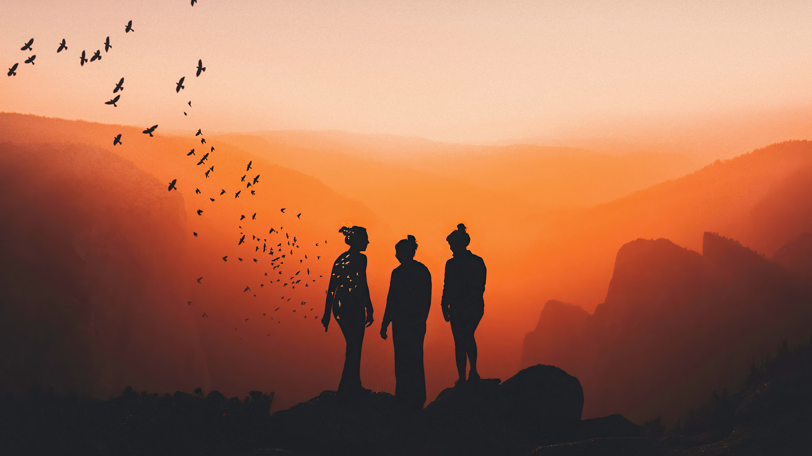

Our Story Behind Polaris
Our teacher has given us the task to establish a new group for computer programming in HTML, therefore let's begin with a story. We were working on our assessment task in the computer lab at the time. Each group must have five individuals, according to our teacher. We needed to create a new project because the group has too many members and some of them might not participate, which is why it changed. We now have new groupings as a result. Bernard, one of our members, first asked Theo and Jc to join before asking Tristan. James, another members of ours, wanted to join so we had to take him. We sat next to one another at that time as well. After that day, we begin discussing the details of our website.
We now begin to make our proposition on the information on our website. Well, we had no idea how to begin our proposal.
Prior to creating this portfolio, we also created an individual portfolio. But this time, we weren't in a group. Additionally, we will include some information that is missing from our individual portfolios.
In order to prevent ourselves from neglecting our experiences of being students and teenagers in the future, we wanted to preserve this endeavor in our own memory. It gives us the opportunity to be more creative and intimate so that we may advance and showcase our skills, projects, and experiences. It is a method with many different aspects. Collect one's experiences, goals, desires, and ideas. It shows how we are as people and as students. We use this as a portfolio to keep track of memories that we might one day need to recall to. Memory is an essential part of human intelligence because it allows us to recall and draw from past events to frame our knowledge and behavior in the present. People also use memory as a framework for comprehending the past, present, and future.
Leave a comment